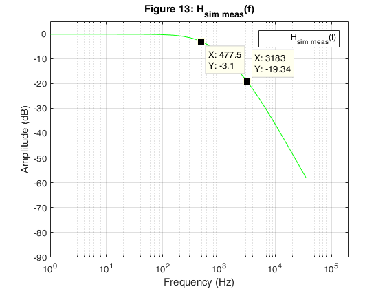

ELEN 100L (Electric Circuits II): Project 1, Shane Buck, Thomas Heckman
Hard Copy Deliverables:
- Hard copy for hand calculations.
- A MATLAB script and publish the solution using MATLAB's publish feature.
- Turn in MATLAB scripts and a document of the run-time results.
- Turn in the Excel file with the measured results.
Soft Copy Deliverables:
- Turn in MATLAB files.
- Turn in LTSpice files.
- Turn in the Excel file with the measured results.
Contents
Initialize MATLAB Environment
clear; clc; clf; cla; close all; format long; format compact;
Setup global variables
% These Ideal Design element values are fixed in the circuit. VG = 1 ; % Generator voltage R1_ideal = 1250 ; % Ohms R2_ideal = 1333.33 ; % Ohms C1_ideal = 0.1*10^-6 ; % Farads C2_ideal = 0.1*10^-6 ; % Farads % These Actual Design element values are fixed in the circuit. R1_actual = 1200 ; % Ohms R2_actual = 1300 ; % Ohms C1_actual = 0.1*10^-6 ; % Farads C2_actual = 0.1*10^-6 ; % Farads % Setup values for the poles. w0 = 3000 ; % Radians/Second w1 = 20000 ; % Radians/Second f0 = (3000/(2*pi)) ; % Hertz f1 = (20000/(2*pi)) ; % Hertz % Build an array for the angular frequency and convert it to Hertz. dw = 10; % Step size for analysis w = [1:dw:w0-dw, ... w0, ... w0+dw:dw:w1-dw, ... w1, ... w1+dw:dw:1.0e6]; % Radians/Second (ensure poles are included) f = w/(2*pi) ; % Hertz % These values are used for plotting purposes. fignum = 1; plot_left = 1; plot_right = 2e5; % x-axis range (Hertz) plot_bottom = -90; plot_top = 5; % y-axis range (dB)
Problem 3

fignum = fignum+1;
Display the component values for the Ideal and Actual designs.
disp(' '); disp('The Ideal Design component values are:'); fprintf(' R1 = %+11.4f Ohms.\n', R1_ideal ); fprintf(' R2 = %+11.4f Ohms.\n', R2_ideal ); fprintf(' C1 = %+11.4e Farads.\n', C1_ideal ); fprintf(' C2 = %+11.4e Farads.\n', C2_ideal ); disp(' '); disp('The Actual Design component values are:'); fprintf(' R1 = %+11.4f Ohms.\n', R1_actual ); fprintf(' R2 = %+11.4f Ohms.\n', R2_actual ); fprintf(' C1 = %+11.4e Farads.\n', C1_actual ); fprintf(' C2 = %+11.4e Farads.\n', C2_actual );
The Ideal Design component values are:
R1 = +1250.0000 Ohms.
R2 = +1333.3300 Ohms.
C1 = +1.0000e-07 Farads.
C2 = +1.0000e-07 Farads.
The Actual Design component values are:
R1 = +1200.0000 Ohms.
R2 = +1300.0000 Ohms.
C1 = +1.0000e-07 Farads.
C2 = +1.0000e-07 Farads.
Compute the percent differences between the Ideal and Actual design component values.
diff_R1_ideal_actual = ( R1_actual - R1_ideal )/abs(R1_ideal)*100; diff_R2_ideal_actual = ( R2_actual - R2_ideal )/abs(R2_ideal)*100; diff_C1_ideal_actual = ( C1_actual - C1_ideal )/abs(C1_ideal)*100; diff_C2_ideal_actual = ( C2_actual - C2_ideal )/abs(C2_ideal)*100; disp(' '); disp('The percent difference between Ideal and Actual design'); disp('component values:'); fprintf(' %% diff R1 = %+8.4f (%%).\n', diff_R1_ideal_actual ); fprintf(' %% diff R2 = %+8.4f (%%).\n', diff_R2_ideal_actual ); fprintf(' %% diff C1 = %+8.4f (%%).\n', diff_C1_ideal_actual ); fprintf(' %% diff C2 = %+8.4f (%%).\n', diff_C2_ideal_actual );
The percent difference between Ideal and Actual design
component values:
% diff R1 = -4.0000 (%).
% diff R2 = -2.4998 (%).
% diff C1 = +0.0000 (%).
% diff C2 = +0.0000 (%).
Display the poles for the target circuit design transfer function.
disp(' '); disp('The poles for the circuit are:'); fprintf(' w0 = %+11.4f Radians/Second.\n',w0); fprintf(' w1 = %+11.4f Radians/Second.\n',w1); fprintf(' f0 = %+11.4f Hertz.\n',f0); fprintf(' f1 = %+11.4f Hertz.\n',f1);
The poles for the circuit are:
w0 = +3000.0000 Radians/Second.
w1 = +20000.0000 Radians/Second.
f0 = +477.4648 Hertz.
f1 = +3183.0989 Hertz.
Setup the matrices used to generate the Bode plots for the Ideal and Actual designs.
G1_ideal = [ ... (1) (0) (0); ... (-1/R1_ideal) (1/R1_ideal + 1/R2_ideal) (-1/R2_ideal); ... (0) (-1/R2_ideal) (1/R2_ideal)]; G2_ideal = [ ... (0) (0) (0); ... (0) (C1_ideal) (0); ... (0) (0) (C2_ideal)]; G3_ideal = [ ... (0) (0) (0); ... (0) (0) (0); ... (0) (0) (0)]; G1_actual = [ ... (1) (0) (0); ... (-1/R1_actual) (1/R1_actual + 1/R2_actual) (-1/R2_actual); ... (0) (-1/R2_actual) (1/R2_actual)]; G2_actual = [ ... (0) (0) (0); ... (0) (C1_actual) (0); ... (0) (0) (C2_actual)]; G3_actual = [ ... (0) (0) (0); ... (0) (0) (0); ... (0) (0) (0)]; B = [VG;0;0];
Locate the poles in the frequency vector for plotting purposes.
% Find the pole values. pole_1 = 0; for iter = 1:length(f) % Locate the first pole if (f(iter) == f0) pole_1 = iter; break; end end pole_2 = 0; for iter = pole_1+1:length(f) % Locate the second pole if (f(iter) == f1) pole_2 = iter; break; end end
Calculate the frequency response for the Ideal and Actual designs.
Hw_ideal = proj1E100_freqresp( G1_ideal,G2_ideal,G3_ideal,B,w,VG);
Hw_actual = proj1E100_freqresp( G1_actual,G2_actual,G3_actual,B,w,VG);
% Capture the values at the poles.
Hw_ideal_f0 = Hw_ideal(pole_1);
Hw_ideal_f1 = Hw_ideal(pole_2);
Hw_actual_f0 = Hw_actual(pole_1);
Hw_actual_f1 = Hw_actual(pole_2);
Generate the plot for and indicate where the two poles occur.
fignum = fignum+1; figObj = figure(fignum); % Establish a figure number set(fignum, 'Name',['H(f) Ideal Design']); % Name the figure Hw_ideal_Plot = ... semilogx( f, Hw_ideal ,'-r'); % Generate plot grid on; % Turn grid on xlabel('Frequency (Hz)'); % Label the x-axis ylabel('Amplitude (dB)'); % Label the y-axis axis([plot_left, plot_right, ... plot_bottom, plot_top]); % Bound plot title(['Figure ',num2str(fignum,'%-2.u'),... ': H_i_d_e_a_l(f)']); legend('H_i_d_e_a_l(f)', 'Location', 'NorthEast'); % Add cursors to the plot. makedatatip(Hw_ideal_Plot, [pole_1; pole_2]);
Generate the plot for and indicate where the two poles occur.
fignum = fignum+1; figObj = figure(fignum); % Establish a figure number set(fignum, 'Name',['H(f) Actual Design']); % Name the figure Hw_actual_Plot = ... semilogx(f , Hw_actual ,'-b'); % Generate plot grid on; % Turn grid on xlabel('Frequency (Hz)'); % Label the x-axis ylabel('Amplitude (dB)'); % Label the y-axis axis([plot_left, plot_right, ... plot_bottom, plot_top]); % Bound plot title(['Figure ',num2str(fignum,'%-2.u'),... ': H_a_c_t_u_a_l(f)']); legend('H_a_c_t_u_a_l(f)', 'Location', 'NorthEast'); % Add cursors to the plot. makedatatip(Hw_actual_Plot, [pole_1; pole_2]);
Generate the plot for comparing and .
fignum = fignum+1; figObj = figure(fignum); % Establish a figure number set(fignum, 'Name', ... ['H(f) Ideal and Actual Design']); % Name the figure Hw_ideal_actual_Plot = ... semilogx( f , Hw_ideal ,'-r', ... f , Hw_actual ,'-b'); % Generate plot grid on; % Turn grid on xlabel('Frequency (Hz)'); % Label the x-axis ylabel('Amplitude (dB)'); % Label the y-axis axis([plot_left, plot_right, ... plot_bottom, plot_top]); % Bound plot title(['Figure ',num2str(fignum,'%-2.u'),... ': H_i_d_e_a_l(f) and H_a_c_t_u_a_l(f)']); legend('H_i_d_e_a_l(f)', 'H_a_c_t_u_a_l(f)', 'Location', 'NorthEast');

Calculate the percent difference between and at the two poles.
diff_0_ideal_actual = (abs(Hw_actual_f0) - abs(Hw_ideal_f0))/abs(Hw_ideal_f0)*100; diff_1_ideal_actual = (abs(Hw_actual_f1) - abs(Hw_ideal_f1))/abs(Hw_ideal_f1)*100; disp(' '); disp('The difference between Ideal and Actual designs at the poles:'); fprintf(' Ideal Design H(%+10.4f) = %+8.4f (dB).\n', f0, Hw_ideal_f0); fprintf(' Actual Design H(%+10.4f) = %+8.4f (dB).\n', f0, Hw_actual_f0); fprintf(' %% diff = %+8.4f (%%).\n', diff_0_ideal_actual); fprintf(' Ideal Design H(%+10.4f) = %+8.4f (dB).\n', f1, Hw_ideal_f1 ); fprintf(' Actual Design H(%+10.4f) = %+8.4f (dB).\n', f1, Hw_actual_f1 ); fprintf(' %% diff = %+8.4f (%%).\n', diff_1_ideal_actual);
The difference between Ideal and Actual designs at the poles:
Ideal Design H( +477.4648) = -3.1069 (dB).
Actual Design H( +477.4648) = -2.9469 (dB).
% diff = -5.1510 (%).
Ideal Design H(+3183.0989) = -19.5851 (dB).
Actual Design H(+3183.0989) = -19.1496 (dB).
% diff = -2.2234 (%).
Problem 4

fignum = fignum+1;
The LTSpice model for the circuit is shown below.

fignum = fignum+1;
The LTSpice model for the simulation result is shown below.

fignum = fignum+1;
Calculate the percent difference between and actual designs at the two poles.
Hw_ltspice_f0 = -2.94 ; % dB Hw_ltspice_f1 = -19.14 ; % dB f0_ltspice = 3000/(2*pi) ; % Hertz f1_ltspice = 20000/(2*pi) ; % Hertz diff_0_actual_ltspice = (abs(f0_ltspice) - abs(Hw_actual_f0))/abs(Hw_actual_f0)*100; diff_1_actual_ltspice = (abs(f1_ltspice) - abs(Hw_actual_f1))/abs(Hw_actual_f1)*100; disp(' '); disp('The percent difference between MATLAB and LTSpice Actual'); disp('designs at the poles:'); fprintf(' Actual MATLAB H(%+10.4f) = %+8.4f (dB).\n', .... f0, Hw_actual_f0); fprintf(' Actual LTSpice H(%+10.4f) = %+8.4f (dB).\n', ... f0_ltspice, Hw_ltspice_f0); fprintf(' %% diff = %+8.4f (%%).\n', diff_0_actual_ltspice); fprintf(' Actual MATLAB H(%+10.4f) = %+8.4f (dB).\n', ... f1, Hw_actual_f1); fprintf(' Actual LTSpice H(%+10.4f) = %+8.4f (dB).\n', ... f1_ltspice, Hw_ltspice_f1); fprintf(' %% diff = %+8.4f (%%).\n', diff_1_actual_ltspice);
The percent difference between MATLAB and LTSpice Actual
designs at the poles:
Actual MATLAB H( +477.4648) = -2.9469 (dB).
Actual LTSpice H( +477.4648) = -2.9400 (dB).
% diff = +16102.3129 (%).
Actual MATLAB H(+3183.0989) = -19.1496 (dB).
Actual LTSpice H(+3183.0989) = -19.1400 (dB).
% diff = +16522.2317 (%).
Problem 5

fignum = fignum+1;
Vary the Actual design component values and calculate the frequency response for each variation.
% Declare the number of component value iterations. value_sets = 5 ; % Build the actual component vector Q_actual = [R1_actual, R2_actual, C1_actual, C2_actual]; % Generate the frequency response values for the specified number of % iterations. [Hw_actual_varied, Q_actual_varied] = ... proj1E100_freqresp_varied( Q_actual,B,w,VG,value_sets); % Capture the values at the poles. Hw_actual_varied_f0 = zeros(1,value_sets); Hw_actual_varied_f1 = zeros(1,value_sets); for iter = 1:value_sets Hw_actual_varied_f0(iter) = Hw_actual_varied(iter, pole_1); Hw_actual_varied_f1(iter) = Hw_actual_varied(iter, pole_2); end;
Generate the plot for variations in the Actual design component values and display all curves on a single plot.
fignum = fignum+1; figObj = figure(fignum); % Establish a figure number set(fignum, 'Name', ... ['H(f) Actual Design Varied']); % Name the figure Hw_actual_varied_Plot = ... semilogx( f , Hw_actual_varied ); % Generate plot grid on; % Turn grid on xlabel('Frequency (Hz)'); % Label the x-axis ylabel('Amplitude (dB)'); % Label the y-axis axis([plot_left, plot_right, ... plot_bottom, plot_top]); % Bound plot title(['Figure ',num2str(fignum,'%-2.u'),... ': Varied H_a_c_t_u_a_l(f)']); legend('H_1(f)', 'H_2(f)', 'H_3(f)', 'H_4(f)', 'H_5(f)', ... 'Location', 'NorthEast');
Calculate the percent difference between and at the two poles of each variation.
diff_0_actual_varied = ... (Hw_actual_varied_f0 - Hw_actual_f0)/abs(Hw_actual_f0)*100; diff_1_actual_varied = ... (Hw_actual_varied_f1 - Hw_actual_f1)/abs(Hw_actual_f1)*100; disp(' '); disp('The difference between Varied and Actual designs at the poles:'); for iter = 1:value_sets diff_R1_actual_varied = ... (Q_actual_varied(iter,1) - R1_actual)/abs(R1_actual)*100; diff_R2_actual_varied = ... (Q_actual_varied(iter,2) - R2_actual)/abs(R2_actual)*100; diff_C1_actual_varied = ... (Q_actual_varied(iter,3) - C1_actual)/abs(C1_actual)*100; diff_C2_actual_varied = ... (Q_actual_varied(iter,4) - C2_actual)/abs(C2_actual)*100; fprintf(' Variation Component Set %-2.u: \n', iter); fprintf(' R1 = %+11.4f Ohms, %% diff = %+8.4f (%%).\n', ... Q_actual_varied(iter,1), diff_R1_actual_varied); fprintf(' R2 = %+11.4f Ohms, %% diff = %+8.4f (%%).\n', ... Q_actual_varied(iter,2), diff_R2_actual_varied); fprintf(' C1 = %+11.4e Farads, %% diff = %+8.4f (%%).\n', ... Q_actual_varied(iter,3), diff_C1_actual_varied); fprintf(' C2 = %+11.4e Farads, %% diff = %+8.4f (%%).\n', ... Q_actual_varied(iter,4), diff_C2_actual_varied); fprintf(' Varied Design H(%+10.4f) = %+8.4f (dB).\n', ... f0, Hw_actual_varied_f0(iter)); fprintf(' Actual Design H(%+10.4f) = %+8.4f (dB).\n', ... f0, Hw_actual_f0); fprintf(' %% diff = %+8.4f (%%).\n', ... diff_0_actual_varied(iter)); fprintf(' Varied Design H(%+10.4f) = %+8.4f (dB).\n', ... f1, Hw_actual_varied_f1(iter)); fprintf(' Actual Design H(%+10.4f) = %+8.4f (dB).\n', ... f1, Hw_actual_f1); fprintf(' %% diff = %+8.4f (%%).\n', ... diff_1_actual_varied(iter)); end;
The difference between Varied and Actual designs at the poles:
Variation Component Set 1 :
R1 = +1128.7966 Ohms, % diff = -5.9336 (%).
R2 = +1472.0309 Ohms, % diff = +13.2331 (%).
C1 = +1.0341e-07 Farads, % diff = +3.4106 (%).
C2 = +1.0199e-07 Farads, % diff = +1.9889 (%).
Varied Design H( +477.4648) = -3.0592 (dB).
Actual Design H( +477.4648) = -2.9469 (dB).
% diff = -3.8110 (%).
Varied Design H(+3183.0989) = -19.7536 (dB).
Actual Design H(+3183.0989) = -19.1496 (dB).
% diff = -3.1537 (%).
Variation Component Set 2 :
R1 = +1400.2530 Ohms, % diff = +16.6877 (%).
R2 = +1188.6363 Ohms, % diff = -8.5664 (%).
C1 = +1.1029e-07 Farads, % diff = +10.2880 (%).
C2 = +1.1015e-07 Farads, % diff = +10.1492 (%).
Varied Design H( +477.4648) = -3.8172 (dB).
Actual Design H( +477.4648) = -2.9469 (dB).
% diff = -29.5337 (%).
Varied Design H(+3183.0989) = -21.0562 (dB).
Actual Design H(+3183.0989) = -19.1496 (dB).
% diff = -9.9562 (%).
Variation Component Set 3 :
R1 = +1142.6140 Ohms, % diff = -4.7822 (%).
R2 = +1335.2673 Ohms, % diff = +2.7129 (%).
C1 = +8.3034e-08 Farads, % diff = -16.9658 (%).
C2 = +8.2158e-08 Farads, % diff = -17.8420 (%).
Varied Design H( +477.4648) = -2.1035 (dB).
Actual Design H( +477.4648) = -2.9469 (dB).
% diff = +28.6214 (%).
Varied Design H(+3183.0989) = -16.5931 (dB).
Actual Design H(+3183.0989) = -19.1496 (dB).
% diff = +13.3504 (%).
Variation Component Set 4 :
R1 = +1214.7828 Ohms, % diff = +1.2319 (%).
R2 = +1445.1670 Ohms, % diff = +11.1667 (%).
C1 = +1.1736e-07 Farads, % diff = +17.3604 (%).
C2 = +8.5196e-08 Farads, % diff = -14.8038 (%).
Varied Design H( +477.4648) = -2.8683 (dB).
Actual Design H( +477.4648) = -2.9469 (dB).
% diff = +2.6660 (%).
Varied Design H(+3183.0989) = -19.5797 (dB).
Actual Design H(+3183.0989) = -19.1496 (dB).
% diff = -2.2456 (%).
Variation Component Set 5 :
R1 = +1233.0354 Ohms, % diff = +2.7529 (%).
R2 = +1284.0831 Ohms, % diff = -1.2244 (%).
C1 = +8.0476e-08 Farads, % diff = -19.5239 (%).
C2 = +9.3485e-08 Farads, % diff = -6.5151 (%).
Varied Design H( +477.4648) = -2.5632 (dB).
Actual Design H( +477.4648) = -2.9469 (dB).
% diff = +13.0201 (%).
Varied Design H(+3183.0989) = -17.7041 (dB).
Actual Design H(+3183.0989) = -19.1496 (dB).
% diff = +7.5485 (%).
Problem 6

fignum = fignum+1;
Display the measured values for the components used in the Actual design.
R1_meas = 1.1980*10^3 ; % Ohms R2_meas = 1.2841*10^3 ; % Ohms C1_meas = 0.1048*10^-6 ; % Farads C2_meas = 0.0989*10^-6 ; % Farads disp(' '); fprintf('Measured component values are:\n'); fprintf(' R1 = %+11.4f Ohms.\n', R1_meas); fprintf(' R2 = %+11.4f Ohms.\n', R2_meas); fprintf(' C1 = %+11.4e Farads.\n', C1_meas); fprintf(' C2 = %+11.4e Farads.\n', C2_meas);
Measured component values are:
R1 = +1198.0000 Ohms.
R2 = +1284.1000 Ohms.
C1 = +1.0480e-07 Farads.
C2 = +9.8900e-08 Farads.
Compute the percent differences between the Measured and Actual design component values.
diff_R1_meas_actual = (R1_meas - R1_actual)/abs(R1_actual)*100; diff_R2_meas_actual = (R2_meas - R2_actual)/abs(R2_actual)*100; diff_C1_meas_actual = (C1_meas - C1_actual)/abs(C1_actual)*100; diff_C2_meas_actual = (C2_meas - C2_actual)/abs(C2_actual)*100; disp(' '); disp('The percent difference between Measured and Actual design'); disp('component values:'); fprintf(' %% diff R1 = %+8.4f (%%).\n', diff_R1_meas_actual); fprintf(' %% diff R2 = %+8.4f (%%).\n', diff_R2_meas_actual); fprintf(' %% diff C1 = %+8.4f (%%).\n', diff_C1_meas_actual); fprintf(' %% diff C2 = %+8.4f (%%).\n', diff_C2_meas_actual);
The percent difference between Measured and Actual design
component values:
% diff R1 = -0.1667 (%).
% diff R2 = -1.2231 (%).
% diff C1 = +4.8000 (%).
% diff C2 = -1.1000 (%).
Import the measured data for processing.
The measured values for frequency response are contained in the external Excel spreadsheet file named "ELEN100L_Project_1_Measured_Results_Lab.xlsx". These measured values are imported into MATLAB at run-time using MATLAB's Import feature. For the solution shown below, the initial "import" was executed to generate an external function file which can be called at run-time.
[freq_meas,Vg_meas,Vo_meas] = importfile_problem6... ('ELEN100L_Project_1_Measured_Results_Lab.xlsx','Sheet1',2,81); % Convert the measured column vectors to single row vectors. dim = size(freq_meas); rows = 1; columns = dim(1,1); freq_meas = reshape(freq_meas, rows, dim(1,1)); Vg_meas = reshape(Vg_meas , rows, dim(1,1)); Vo_meas = reshape(Vo_meas , rows, dim(1,1));
Locate the poles in the frequency vector for plotting purposes.
converge_criteria = 1.0; % Find the pole values. pole_1_meas = 0; for iter = 1:length(freq_meas) % Locate the first pole if (abs(freq_meas(iter) - f0) <= converge_criteria) pole_1_meas = iter; break; end; end; pole_2_meas = 0; for iter = pole_1_meas+1:length(freq_meas) % Locate the second pole if (abs(freq_meas(iter) - f1) <= converge_criteria) pole_2_meas = iter; break; end; end;
Calculate the frequency response for the Measured Actual design.
Hw_meas_actual = 20*log10(abs(Vo_meas)./abs(Vg_meas)) ; % |H(w)| in decibels (dB) is a function9 % of Vo_meas and Vg_meas % This section of code is used to generate an expected frequency response % based upon the measured component values. G1_sim_meas_actual = [ ... (1) (0) (0); ... (-1/R1_meas) (1/R1_meas + 1/R2_meas) (-1/R2_meas); ... (0) (-1/R2_actual) (1/R2_meas)]; G2_sim_meas_actual = [ ... (0) (0) (0); ... (0) (C1_meas) (0); ... (0) (0) (C2_meas)]; G3_sim_meas_actual = [ ... (0) (0) (0); ... (0) (0) (0); ... (0) (0) (0)]; Hw_sim_meas_actual = ... proj1E100_freqresp(G1_sim_meas_actual, G2_sim_meas_actual,... G3_sim_meas_actual, B, 2*pi*freq_meas, VG); % Capture the values at the poles. Hw_meas_actual_f0 = Hw_meas_actual(pole_1_meas); Hw_meas_actual_f1 = Hw_meas_actual(pole_2_meas); Hw_sim_meas_actual_f0 = Hw_sim_meas_actual(pole_1_meas); Hw_sim_meas_actual_f1 = Hw_sim_meas_actual(pole_2_meas);
Generate the plot for and indicate where the two poles occur.
fignum = fignum+1; figObj = figure(fignum); % Establish a figure number set(fignum, 'Name', ... ['H(f) Measured Actual Design']); % Name the figure Hw_meas_actual_Plot = semilogx(... freq_meas , Hw_meas_actual,'-m'); % Generate plot grid on; % Turn grid on xlabel('Frequency (Hz)'); % Label the x-axis ylabel('Amplitude (dB)'); % Label the y-axis axis([plot_left, plot_right, ... plot_bottom, plot_top]); % Bound plot title(['Figure ',num2str(fignum,'%-2.u'),... ': H_m_e_a_s_u_r_e_d(f)']); legend('H_m_e_a_s_u_r_e_d(f)', 'Location', 'NorthEast'); % Add cursors to the plot. makedatatip(Hw_meas_actual_Plot, [pole_1_meas; pole_2_meas]);

Generate the plot for  and indicate where the two poles occur.
and indicate where the two poles occur.
fignum = fignum+1; figObj = figure(fignum); % Establish a figure number set(fignum, 'Name', ... ['H(f) Simulate Measured Actual Design']); % Name the figure Hw_sim_meas_actual_Plot = semilogx(... freq_meas , Hw_sim_meas_actual,'-g'); % Generate plot grid on; % Turn grid on xlabel('Frequency (Hz)'); % Label the x-axis ylabel('Amplitude (dB)'); % Label the y-axis axis([plot_left, plot_right, ... plot_bottom, plot_top]); % Bound plot title(['Figure ',num2str(fignum,'%-2.u'),... ': H_s_i_m_ _m_e_a_s(f)']); legend('H_s_i_m_ _m_e_a_s(f)', 'Location', 'NorthEast'); % Add cursors to the plot. makedatatip(Hw_sim_meas_actual_Plot, [pole_1_meas; pole_2_meas]);
Generate the plot for comparing , and .
fignum = fignum+1; figObj = figure(fignum); % Establish a figure number set(fignum, 'Name', ... ['H(f) Measured and Actual Design']); % Name the figure semilogx( f, Hw_actual,'-b',... freq_meas, Hw_meas_actual,'-m', ... freq_meas, Hw_sim_meas_actual,'-g'); % Generate plot grid on; % Turn grid on xlabel('Frequency (Hz)'); % Label the x-axis ylabel('Amplitude (dB)'); % Label the y-axis axis([plot_left, plot_right, ... plot_bottom, plot_top]); % Bound plot title(['Figure ',num2str(fignum,'%-2.u'),... ': H_a_c_t_u_a_l(f), H_m_e_a_s(f), and H_s_i_m_ _m_e_a_s(f)']); legend('H_a_c_t_u_a_l(f)', 'H_m_e_a_s(f)', ... 'H_s_i_m_ _m_e_a_s(f)',... 'Location', 'NorthEast');
Calculate the percent difference between , , and actual designs at the two poles.
f0_measured = freq_meas(pole_1_meas); % Hertz f1_measured = freq_meas(pole_2_meas); % Hertz diff_0_meas_actual = ... (Hw_meas_actual_f0 - Hw_actual_f0)/abs(Hw_actual_f0)*100; diff_1_meas_actual = ... (Hw_meas_actual_f1 - Hw_actual_f1)/abs(Hw_actual_f1)*100; diff_0_sim_meas_actual = ... (Hw_sim_meas_actual_f0 - Hw_actual_f0)/abs(Hw_actual_f0)*100; diff_1_sim_meas_actual = ... (Hw_sim_meas_actual_f1 - Hw_actual_f1)/abs(Hw_actual_f1)*100; disp(' '); disp('The percent difference between MATLAB and Measured Actual'); disp('designs at the poles:'); fprintf(' Actual MATLAB H(%+10.4f) = %+8.4f (dB).\n', .... f0, Hw_actual_f0); fprintf(' Actual Measured H(%+10.4f) = %+8.4f (dB).\n', ... f0_measured, Hw_meas_actual_f0); fprintf(' %% diff = %+8.4f (%%).\n', diff_0_meas_actual); fprintf(' Actual MATLAB H(%+10.4f) = %+8.4f (dB).\n', .... f1, Hw_actual_f1); fprintf(' Actual Measured H(%+10.4f) = %+8.4f (dB).\n', ... f1_measured, Hw_meas_actual_f1); fprintf(' %% diff = %+8.4f (%%).\n', diff_1_meas_actual); disp(' '); disp('The percent difference between MATLAB and the simulated'); disp('Measured Actual designs at the poles:'); fprintf(' Actual MATLAB H(%+10.4f) = %+8.4f (dB).\n', .... f0, Hw_actual_f0); fprintf(' Simulate Measured H(%+10.4f) = %+8.4f (dB).\n', ... f0_measured, Hw_sim_meas_actual_f0); fprintf(' %% diff = %+8.4f (%%).\n', diff_0_sim_meas_actual); fprintf(' Actual MATLAB H(%+10.4f) = %+8.4f (dB).\n', ... f1, Hw_actual_f1); fprintf(' Simulate Measured H(%+10.4f) = %+8.4f (dB).\n', ... f1_measured, Hw_sim_meas_actual_f1); fprintf(' %% diff = %+8.4f (%%).\n', diff_1_sim_meas_actual);
The percent difference between MATLAB and Measured Actual
designs at the poles:
Actual MATLAB H( +477.4648) = -2.9469 (dB).
Actual Measured H( +477.4648) = -3.0112 (dB).
% diff = -2.1822 (%).
Actual MATLAB H(+3183.0989) = -19.1496 (dB).
Actual Measured H(+3183.0989) = -18.5927 (dB).
% diff = +2.9084 (%).
The percent difference between MATLAB and the simulated
Measured Actual designs at the poles:
Actual MATLAB H( +477.4648) = -2.9469 (dB).
Simulate Measured H( +477.4648) = -3.1003 (dB).
% diff = -5.2057 (%).
Actual MATLAB H(+3183.0989) = -19.1496 (dB).
Simulate Measured H(+3183.0989) = -19.3426 (dB).
% diff = -1.0078 (%).
Program execution complete
disp(' '); disp('Program execution complete....');
Program execution complete....